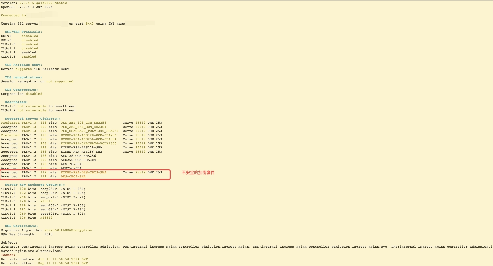
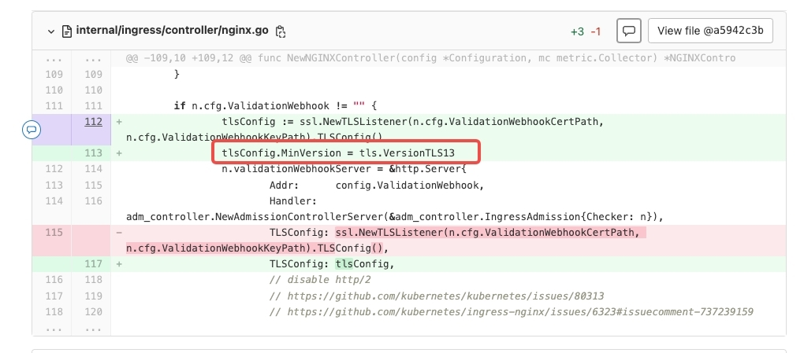
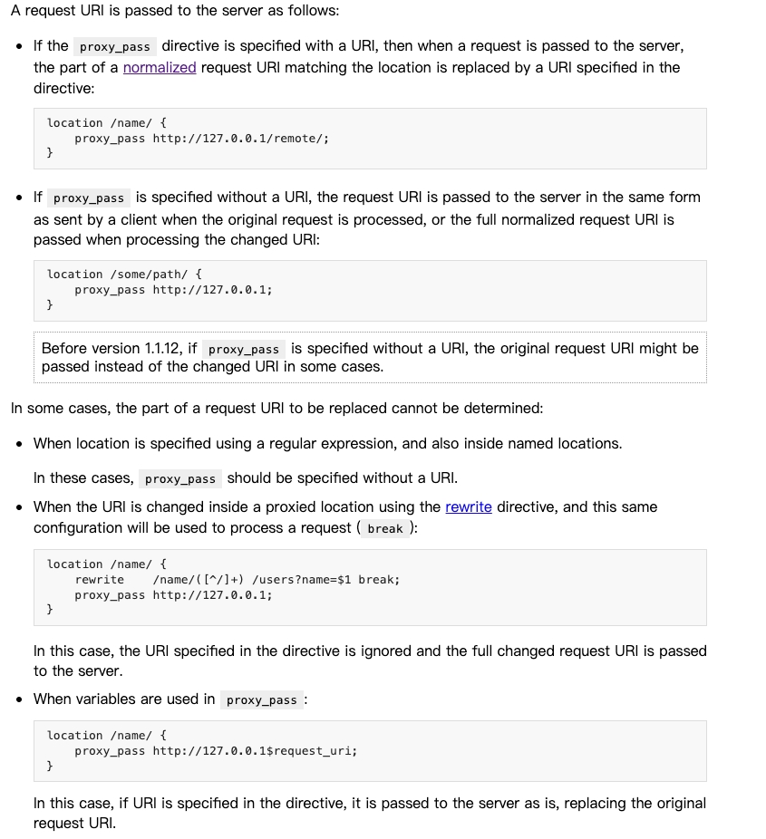
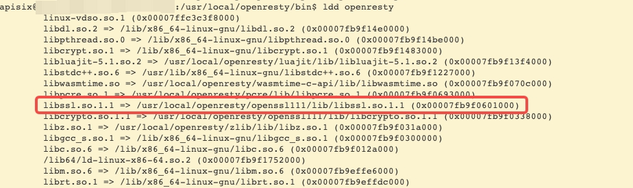
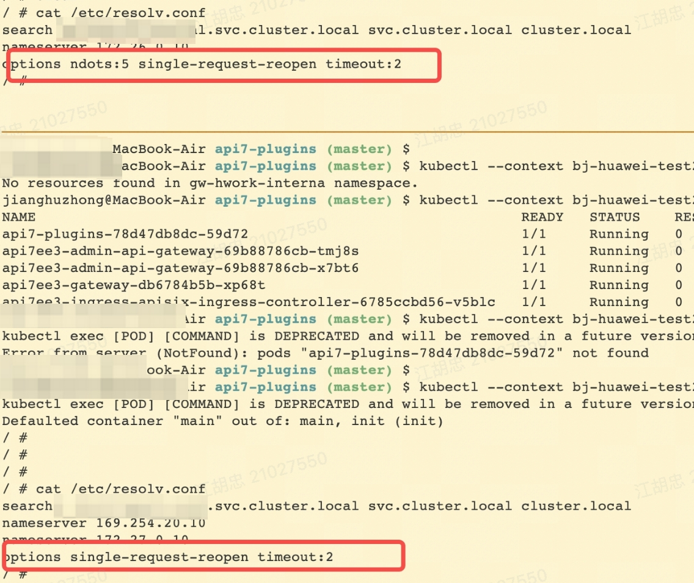
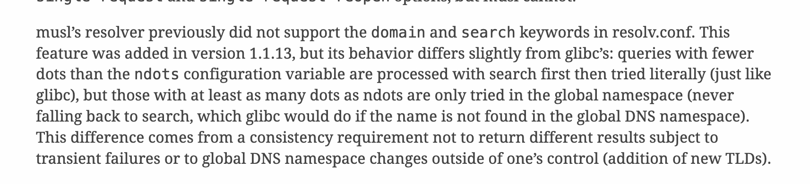
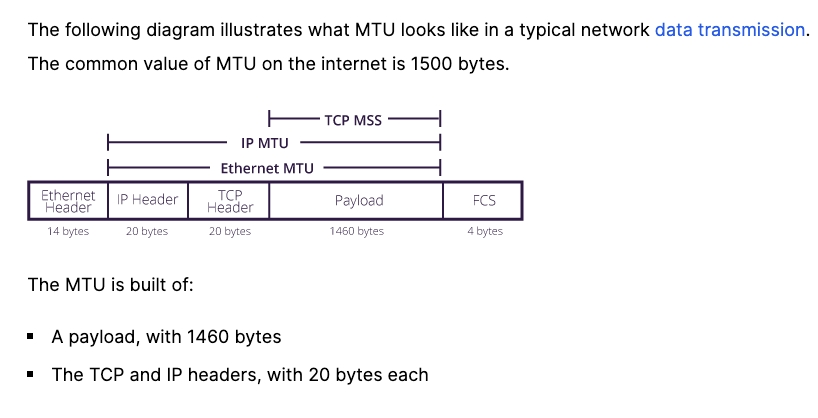

前言
最近在排查用户问题时，遇到一些棘手的问题，因本身知识&技能不足，特此记录备忘。
运维记录
漏洞扫描显示某个端口加密算法不安全
背景
开通DMZ服务器公网访问时，安全部门扫描显示服务器8443端口存在安全漏洞（CVE-2016-2183,CVE-2016-6329），这几台服务器部署着我们的ingress controller（版本：ingress-nginx-controller:v1.1.3），而这个端口是webhook的调用端口。
扫描工具显示的问题如下：支持 SSL 中等强度密码组 (SWEET32)
远程主机支持在一个或多个密码套件中使用 64 位块的块密码。由于使用弱 64 位块密码，因而会受到一个称为 SWEET32 的漏洞影响。具有足够资源的中间人攻击者可利用此漏洞，通过“birthday”攻击检测会在固定密码与已知纯文本之间泄露 XOR 的冲突，进而泄露密码文本（例如安全 HTTPS Cookie），并可能导致劫持经认证的会话。概念验证表明，攻击者仅需 30 个小时就可以从 HTTPS 会话中恢复身份验证 cookie。请注意，在客户端和服务器之间通过相同的 TLS 连接发送大量请求的能力，是发动此攻击的重要条件。如果单个链接允许的请求数量有限，则会减轻该漏洞的严重性。该插件需要报告偏差，因为 Nessus 尚未检查该缓解措施。
Plugin Output:
Medium Strength Ciphers (> 64-bit and < 112-bit key, or 3DES)
Name Code KEX Auth Encryption MAC
———————- ———- — —- ——————— —
ECDHE-RSA-DES-CBC3-SHA 0xC0, 0x12 ECDH RSA 3DES-CBC(168) SHA1
DES-CBC3-SHA 0x00, 0x0A RSA RSA 3DES-CBC(168) SHA1
分析
从安全扫描工具可以看出，问题在于暴露的端口支持在一个或多个密码套件中使用 64 位块的块密码。通过sslscan可以探测端口，并列出目前支持的密码套件。
目前sslscan可以通过github上的指导文档在linux服务期上编译。扫描命令如下：
1 | sslscan 10.xxx.xx.xx:8443 |
扫描的结果如下：

解决
临时规避方案
因考虑到目前webhook的调用，只有在提交资源对象给apiServer后，apiServer才会发起对webhook的调用，目前临时的解决方案是在节点上通过iptables禁用了非来自apiServer的连接请求。
1 | iptables -I INPUT -m tcp -p tcp --dport 8443 -j DROP |
最终解决方案
在ingress controller的源码中，禁用TLSv1.2的加密套件。

Https请求服务器解密查看
背景
用户前端页面使用了类似于/xxxx %3Axxx来请求图片，请求流经集群的ingress nginx后，通过http转发给业务的apisix，apisix通过https协议转发给业务的上游服务。
通过在nginx的pod中抓包显示：发送给apisix的服务并未进行decode。这点与Nginx的说明一致：没有定义URI和rewrite的path不会被decode。
目前排查到了apisix，需要判断apisix是否对转发的路径进行了decode，但是apisix使用了https协议，传统的抓包无法获取http协议的内容。
分析
数据包经应用的openssl包加密发送到内核后，在内核中是无法知道具体的数据内容的。需要在加密之前，读取到apisix发送的内容。目前大多数加密使用的都是openssl。可使用bpf工具在uprobe中附加调试程序打印加密之前的数据。
解决
Debugging with eBPF Part 3: Tracing SSL/TLS connections
1 | 查看进程的动态链接库 |
apisix使用的openssl的动态库的地/usr/local/openresty/openssl111/lib。
抓取到的结果，显示apisix确实对path进行了decode。apisix issue
1 | 进入容器内查看二进制文件的动态链接 |

K8s短域名无法解析
背景
偶然的机会发现在pod中无法解析serviceName.namespace的域名，检查了dns设置和cordns的运行情况，百思不得其解。
分析
比对了正常的和不正常Pod的dns配置发现如下差异，不正常的Pod没有设置ndots。

ndot的说明：与search配合使用，如果查询的域名中包含的点数大于等于ndot，则会首先使用该域名进行解析。默认值是1，上限是15。
ndots: n
Sets a threshold for the number of dots which must
appear in a name given to res_query(3) (see
resolver(3)) before an initial absolute query will
be made. The default for n is 1, meaning that if
there are any dots in a name, the name will be
tried first as an absolute name before any search
list elements are appended to it. The value for
this option is silently capped to 。
有问题的Pod使用了alpine的镜像，使用了musl的dns解析库。其中有这样的说明。

也就是说一旦域名大于等于ndot后（有问题的pod默认ndots=1），musl不会再使用search搜索。
解决
需要注入ndots。目前都是公有云的local dns给注入的。
MTU&MSS&DF
背景
正常部署的服务突然挂掉无法访问，经排查服务和网络都没有问题，后发现是MTU设置问题，借此来理解MTU、MSS（Maximum Segment Size）及IP数据报文中的DF。
分析
linux内核协议栈 TCP选项之MSS_linux查看mss-CSDN博客
客户端和服务端在三次握手中的前两次，通过TCP首部的MSS选项来协商MSS的大小。
客户端：发送syn的MSS的MSS选项，大小=MTU-40（IP头20+TCP头20）
服务端：接受到syn的MSS后，比较syn的MSS和用户通过套接字TCP_MAXSEG的最小值保存在mss_clamp中，该值会影响发送过程中MSS的选择。服务端发送syn+ack给客户端，此处对MSS的处理与客户端相同。
客户端：客户端收到sync+ack后，比较syn的MSS和用户通过套接字TCP_MAXSEG的最小值保存在mss_clamp中，该值会影响发送过程中MSS的选择。
TCP发送过程中会多次更新MSS的值，根据设备MTU或者当前最新的PMTU更新。

在IP报文的有分片标志，一共三位，第1位保留，第2位代表DF：Don’t Fragment，如果设置为1代表不允许分片，第3位是MF：More Fragment，如果为1，代表后面还有分片，0代表最后一个分片。
IP分片和重组发生在网络层，数据传输过程中，每个路由器的MTU可能不同，如果不允许分片，将会触发ICMP协议，将当前数据包丢弃，并把当前路由的MTU回传给源主机。
TCP分段和重组发生在传输层。使用TCP协议一般会通过MSS协商数据包大小，所以很少会导致IP分片（UDP协议不会自己分段，或导致IP分片）。
PromQL remote read不支持|
背景
在总prometheus（使用remote read级联查询下级prometheus）中统计多个实例的数据，发现使用labelName =~’xxx|sss’并不生效。
分析
所使用的labelName是通过external label添加上去的，原始的prometheus的指标中并不存在这个label。
解决
拆开按每个指标查询，然后+。
otel processors 无法读取HostNetwork的Pod标签
背景
otel collector中使用processor读取pod的label通过指定的规则附加到上报链路跟踪数据中，将Pod改成hostNetwork后，通过抓包发现上报的指标没有了pod的标签。
分析
processor是通过pod的ip来识别具体的pod的，hostNetwork使用了宿主机的IP。无法查询是哪个pod的标签。
解决
通过在otel 插件中自定义上报的属性数据来上报信息。